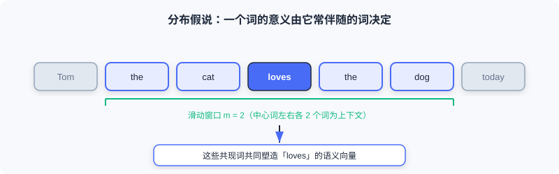

Word2Vec 专题附录
📝 为何独立成篇： 2.2 向量召回 (I2I) 的 2.2.1 只讲清了 Skip-Gram 的直觉与它在推荐里的迁移。本附录补全被略去的部分——CBOW 架构、中心词/上下文双向量表的结构细节、负采样的精确数学形式、以及词向量运算（类比）性质——让你在使用 Item2Vec / EGES / Airbnb 之前，先吃透底层引擎。
Word2Vec 的目标很朴素：用 大量无标注文本 ，给每个词学一个 低维稠密向量 ，使得：
- 语义相近的词，向量在空间中也相近；
- 词与词之间的关系可以通过 向量运算 反映出来。
这套表示可以直接喂给文本分类、机器翻译、信息检索等下游任务——而在推荐里，它被「结构同构」地迁移成了 Item2Vec。
1. 动机：从 one-hot 到稠密向量
早期最直接的做法是用 one-hot 编码 表示词：词表大小为 ，第 个词就是一个第 位为 1、其余为 0 的 维向量。它直观，却有三个致命问题：
| 问题 | 说明 |
|---|---|
| 维度灾难 | 常达百万级，向量又高又稀疏 |
| 无法表达语义 | 任意两个不同词的 one-hot 内积都为 0，「猫」和「狗」被当成毫不相干 |
| 无法表达语法 | 单复数、时态等关系完全丢失 |
我们需要一种 既低维、又能承载语义/语法信息 的表示——这正是 Word2Vec 要解决的。
2. 分布假说与上下文窗口
Word2Vec 的理论根基是语言学的 分布假说 （Firth, 1957）：
「You shall know a word by the company it keeps.」 一个词的意义，由它常伴随出现的词决定。

模型遍历语料中的每个词，通过调整词向量，使「预测的上下文」尽量逼近「语料中真实的上下文」。具体来说，若中心词 在位置 ，其上下文为窗口 内的词 。
3. 两种架构：Skip-gram 与 CBOW
Word2Vec 包含两个镜像对称的模型。在 2.2.1 里我们只用了 Skip-Gram，这里把 CBOW 也补上。

3.1 Skip-gram：用中心词预测上下文
给定一个中心词，模型预测其上下文词出现的概率。对窗口内上下文词 ，条件概率为
其中 是词 的向量表示， 是词表大小。遍历整个语料，似然函数为
3.2 CBOW：用上下文预测中心词
CBOW（Continuous Bag of Words）方向相反：把上下文词 平均 后，预测中心词。
💡 该用哪个？ 推荐场景几乎都用 Skip-gram。原因有二：① 它对低频/长尾词更友好（每个上下文Pair都提供独立监督信号）；② 它天然适配「用户行为序列」这种变长、稀疏的输入，可直接做序列建模。CBOW 因对上下文取平均，在推荐里会抹掉序列顺序信息。
4. 模型结构与双向量表
上面的条件概率公式里藏着一个 极易误解的细节 ：中心词向量 与上下文词向量 并不在同一个向量空间里。

以 Skip-gram 为例，设向量维度为 ，则存在 两张 向量表：
- 中心词向量表
- 上下文词向量表
前向计算流程：
- 输入中心词的 one-hot 表示 ；
- 查表得到中心词向量 ；
- 与上下文向量表第 行相乘，得到 Softmax 的输入；
- 经 Softmax 输出上下文词概率。
⚠️ Common Mistakes in Word2Vec 把 （来自 ）和 （来自 ）当成同一空间里的向量直接比距离。它们来自两张不同的表，只有训练完成后通常把两张表相加/平均得到的「最终词向量」才可用于相似度计算。
5. 负采样：让 Softmax 变得可计算
直接算第 3/4 节的 Softmax 分母，需要遍历整个词表 （百万级），代价不可接受。Word2Vec 用 负采样（Negative Sampling） 把多分类问题拆成多个二分类问题。
以 Skip-gram 为例，原目标被替换为：
其中 是 sigmoid， 为负样本数量， 是负采样分布。原论文取
💡 直觉： 第一项希望「真实上下文词对」的相似度越来越高（抬高正样本）；第二项希望「随机采样的负样本词对」的相似度越来越低（压低负样本）。由 sigmoid 单调性可知，这与最大化原始似然 的目标一致，却避免了对整个词表求和——复杂度从 降到 。
⚠️ Common Mistakes in Word2Vec 以为负采样只是「提速技巧」、不影响语义。事实上，负样本分布 的 次方刻意上抬低频词成为负样本的概率，让模型对罕见词也能学到区分性向量——这对推荐里的长尾物品尤为关键。
6. 词向量运算：类比性质
Word2Vec 最迷人的发现是：训练出的向量空间里， 语义关系可以用向量加减表达。最经典的例子：
这意味着「王 − 男 + 女 ≈ 后」这种类比关系被编码进了几何结构。在推荐里，类似性质表现为「物品 A 与物品 B 的差别，约等于物品 C 与某物品 D 的差别」——这正是后续语义 ID、向量检索能做「可计算类比」的理论底气。
7. 从 Word2Vec 到推荐：Item2Vec 的桥接
把 Word2Vec 迁移到推荐，只需做一次 结构同构替换 （详见 2.2.1）：
| 文本世界 | 推荐世界 |
|---|---|
| 词语 | 物品 |
| 句子 | 用户交互序列 |
| 词语共现 | 物品被同一用户交互 |
替换后：
- Skip-gram + 负采样 → 直接成为 Item2Vec 的训练原型；
- 学到的物品向量 → 近邻检索即可实现 I2I 召回；
- 第 4–5 节的双向量表、负采样分布等机制，原封不动地支撑起 EGES、Airbnb 等工业级变体。
💡 一句话收口： Word2Vec 的引擎（Skip-gram + 双向量表 + 负采样）是 I2I 向量召回的方法论基石；推荐领域的所有改进，都只是在「如何构造序列」和「如何定义正负样本」上做文章。
本章小结
- Word2Vec 用 分布假说 把「共现」学成「稠密语义向量」，解决了 one-hot 高维、稀疏、无语义的三大缺陷。
- 两大架构 Skip-gram （中心→上下文）与 CBOW （上下文→中心），推荐中几乎总用 Skip-gram。
- 结构上有 两张向量表 （中心）与 （上下文），分属不同空间，最终向量需合并后使用。
- 负采样 用 个二分类近似全词表 Softmax，并通过 上抬低频词，是工业可行性的关键。
- 词向量具备 类比运算 性质，为语义 ID 与向量检索提供理论支撑。
- 通过「词→物品、句子→行为序列」的同构替换，Word2Vec 直接成为 Item2Vec 与后续 I2I 方法的引擎。
🔗 前后关联
- 前置： 2.2 向量召回 (I2I) 的 2.2.1 把本附录作为「序列建模理论基础」简要引用；读完本附录再回看，会更清楚 Item2Vec / EGES / Airbnb 为何那样设计。
- 后继： 2.3 双塔模型 (U2I) 用「用户塔 + 物品塔」的稠密向量做召回，与这里的「物品稠密向量」思路一脉相承；6.4 Codebook 量化与语义 ID 则是把「离散词 → 连续向量」反过来做成「连续向量 → 离散语义 ID」，可对照理解。
Practice Problems
Problem A.1 — 双向量表误区 🟢 Easy
有人说：「Word2Vec 里中心词 和上下文词 的向量都在同一个 维空间，直接算余弦相似度就行。」这句话哪里错了？
Approach: 回看第 4 节—— 来自 ， 来自 。
答： 错在认为两者同空间。实际上中心词向量表 与上下文向量表 是两张独立参数表，对应的向量分属不同空间；直接比距离是无效的。训练后通常把两表相加/平均得到最终词向量，才能用于相似度计算。
Problem A.2 — 负采样缩放 🟡 Medium
负采样分布用 而非直接用词频。若某词出现 16 次、另一词出现 81 次，分别计算它们在 次方后的相对权重比（即 ），并说明这个设计对低频词的影响。
Approach: ；。
答： 相对权重比 。注意词频比是 ，经过 次方后差距被 压缩 （5.06→3.375），等于 上抬了低频词 成为负样本的概率——让模型对罕见词也学到区分性向量，缓解长尾问题。
Problem A.3 — 同构迁移 🔴 Hard
把 Word2Vec 迁移到推荐做 Item2Vec 时，为什么「用户交互序列 = 句子」这个映射是结构同构、而非简单类比？请从训练目标（Skip-gram + 负采样）的角度说明，并指出一个原书 2.2.1 提到的、Item2Vec 相对原版 Word2Vec 的 关键简化。
Approach: 同构指「输入单元 + 共现结构 + 训练目标」三者一一对应；关键简化在 Item2Vec 把用户历史当 无序集合 而非序列。
答： 同构体现在：词→物品、句子→用户行为序列、词共现→同用户交互，且 Skip-gram 的 + 负采样目标函数 形式完全不变 ，只是把文本语料换成行为序列语料。关键简化：原书指出 Item2Vec 默认把每个用户的交互历史当成 无序集合 （忽略时间顺序），而原版 Word2Vec 严格依赖滑动窗口内的有序上下文——这是它和文本版最核心的差异。